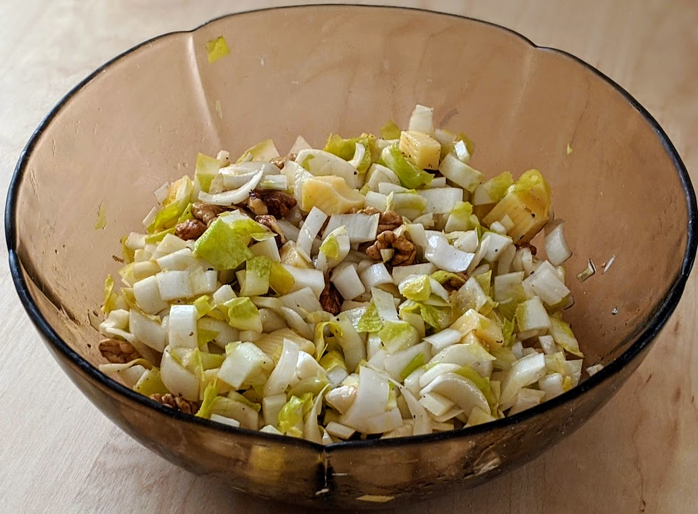

Salade d'endives

Pour 4-5 personnes :
- 5 belles endives
- 100g d'emmental
- Une grosse poignée de noix (disons, 15-20)
- (Facultatif) Une grosse pomme de variété pas trop sucrée
- Une cuillère à soupe de miel
- Trois ou quatre cuillères à soupe d'huile de noix
- Une cuillère à soupe de vinaigre de cidre
- Enlever le bout plat des endives et les feuilles extérieures, les émincer en lamelles pas trop grosses ni trop larges, et mettre le tout dans un saladier.
- Découper l'emmental en cubes pas trop gros (max. 1cm), casser les noix et les mettre en moitié ou quarts de cerneaux, les ajouter dans le saladier.
- Ajouter l'huile, le miel et le vinaigre; saler, poivrer.
- Pas longtemps avant de servir (pour éviter que ça ne noircisse), éplucher la pomme, la couper en morceaux de taille similaire à l'emmental, et l'ajouter dans la salade.
Retour à la liste des recettes